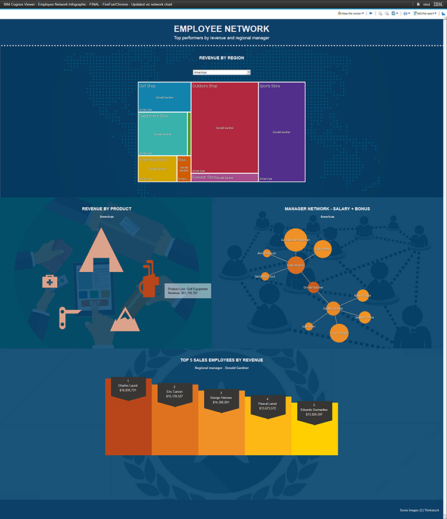

Objective
As a Co-op intern for IBM’s Business Analytics User Experience Team (first term) and Samples Team (second term), I was responsible in assisting projects within the teams, as well as outside of the teams to edit and produce graphical user interface elements to be implemented in IBM software products.
Process
In order to execute my projects, I started with researching and questioning the background information of items that I am designing for the product. For instance, if it was an icon, I would clarify on its feature within the product and the importance to users upon interaction. Afterwards, I would sketch my ideas, followed by polishing them in either Adobe Illustrator or Adobe Photoshop. Furthermore, the digital process of making interfaces and their respective GUI elements consisted of first designing them in black and white to visualize the level of hierarchy, then add colours wherever necessary to match the look and feel of the other product elements. At last, I would then show the end results to others for feedback and have an iterative design cycle until everything is agreed upon in terms of visuals and user experience.
Result
Throughout the two terms in working for a software company, I had an opportunity to apply theory and skills practiced into software products that are used by many business clients. During the design processes, I learned how to apply strict design languages across a product and aligning with the company’s standards, communication, programming, and designing for accessibility which I had minimal experience in. Furthermore, I felt a sense of satisfaction by introducing report samples that have been visually refurbished from a plain business look and feel to interactive infographics, as well as responsive web design to the Samples Team. All in all, loyal IBM customers will now be able to use reports that are more fun and nice.
- 